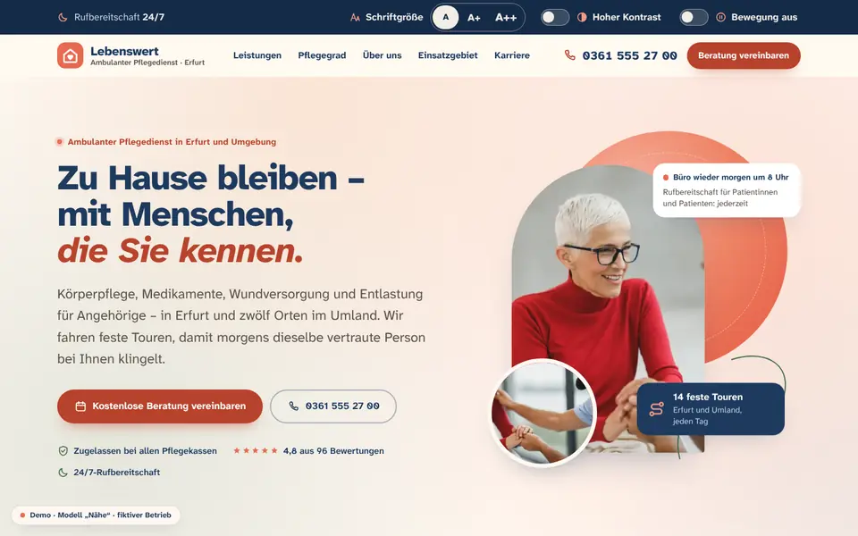
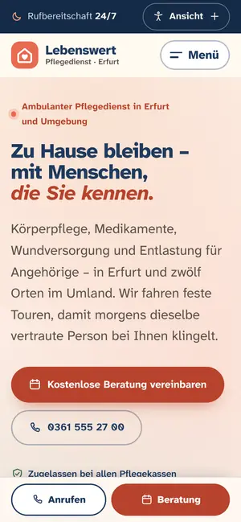

Case Study 16 / 30 · Gesundheit
Lebenswert Ambulanter Pflegedienst
Modell „Nähe“
Warme, barrierearme Pflegedienst-Seite mit Ansichts-Leiste, Pflegegrad-Orientierung und Gehaltsrechner.


Ausgangslage
Ein erfundener ambulanter Pflegedienst in Erfurt. Wer hier landet, ist oft Angehörige oder Angehöriger in einer belastenden Situation und will schnell wissen: Was wird zu Hause geleistet, wer bezahlt es, welcher Pflegegrad könnte passen und wie läuft der erste Kontakt. Gleichzeitig muss die Seite Pflegekräfte ansprechen, denn Personal ist für solche Betriebe das zentrale Thema.
Idee
Die Gestaltung ist warm und ruhig: Creme als Grundfläche, Koralle für Aktionen, Tiefblau für Überschriften und dunkle Abschnitte, Salbei als Beruhigung. Die Schrift Atkinson Hyperlegible Next wurde wegen ihrer Lesbarkeit gewählt und läuft in großer Grundgröße. Bewegung bleibt zurückhaltend, und wer sie nicht will, schaltet sie direkt auf der Seite ab – das passt zu einem Publikum, das zum Teil älter ist oder unter Druck steht.
Was die Seite kann
- Ansicht anpassenSchriftgröße in drei Stufen, hoher Kontrast und Bewegung aus, sofort wirksam und im Browser gespeichert, ohne Aufblitzen beim Laden.
- Pflegegrad-OrientierungSelbsteinschätzung in sechs Lebensbereichen, gewichtet wie das Begutachtungsinstrument, mit Punktbereich, Leistungsbeträgen und nächsten Schritten; der Beratungs-Button füllt das Kontaktformular vor.
- Leistungs-ExplorerTabs für Grundpflege, Behandlungspflege, Verhinderungspflege, Entlastung und Beratungsbesuche, jeweils mit der Frage, wer zahlt.
- Ein Tag auf Tourhorizontale Scroll-Strecke mit mitlaufender Uhr auf dem Desktop, Zeitleiste auf dem Handy.
- Einsatzgebieteigene SVG-Karte mit Pins und Ortsliste, Prüfung nach Ort, Stadtteil oder Postleitzahl.
- KarriereGehaltsrahmen-Rechner nach Rolle, Stunden, Erfahrung und Schichtmodell, Wochenplan-Grafik je Modell und Bewerbungsformular mit Fortschrittsring.
Dein Betrieb
So eine Seite für dich?
Schreib mir kurz, was du anbietest und was deine Website leisten soll. Du bekommst eine ehrliche Einschätzung, was sie kostet und was sie dir bringen kann.
Projekt anfragen